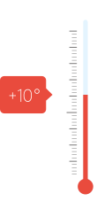

Quiz
1

2

3


1

2

3


1

2

3


1
2

3


1

2
3


1

2
3

Fråga 1 av 8
Hur mycket mat slängs i Sverige varje år?
Dra och släpp det eller de nummer som du tror rätt i cirkeln, undvik de eller det svar som du inte tror hör hemma där. Råkar du välja fel så klickar du på krysset i listan här nedan.
På bilden: 1.000.000, 500.000, 100.000
Du har valt
Fråga 2 av 8
Vad är fossila bränslen?
- Bränslen som förnyas relativt snabbt.
- Olja, naturgas och kol.
- Djur som omvandlats till fossiler.
Du har valt
Fråga 3 av 8
Varför räknas biogas som ett hållbart bränsle?
- För att hållfastheten är hög.
- För att det är ett förnybart och koldioxidneutralt bränsle.
- För att det består av metan.
Du har valt
Fråga 4 av 8
Solenergi som når jorden under en minut är tillräcklig för att täcka alla människors energibehov under:
- En vecka
- En månad
- Ett helt år
Du har valt
Fråga 5 av 8
Vad kan man använda biogas till?
- Fordonsbränsle, uppvärmning och till att generera el.
- Bara fordonsbränsle.
- Fordonsbränsle och uppvärmning.
Du har valt
Fråga 6 av 8
När blev det förbjudet i lag satt slänga avfall på gatan i Sverige?
- År 1868.
- År 1918.
- År 1816.
Du har valt
Fråga 7 av 8
Vilket är osmartast att slänga, har kostat mest att ta fram i form av vatten, näring och energi?
- Ett knippe morötter.
- Ett kokt ägg.
- En skiva stekt oxfilé.
Du har valt
Fråga 8 av 8
Våra politiker har bestämt att minst hälften av matavfallet från hushåll, storkök, butiker och restauranger ska sorteras senast:
- År 2018
- År 2020
- År 2030
Du har valt